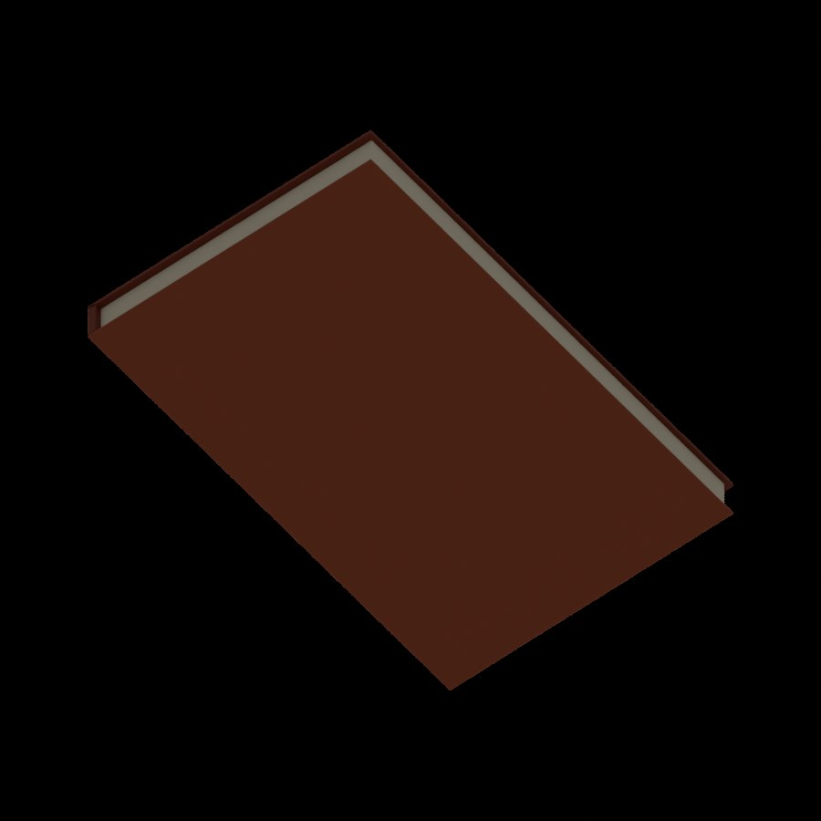
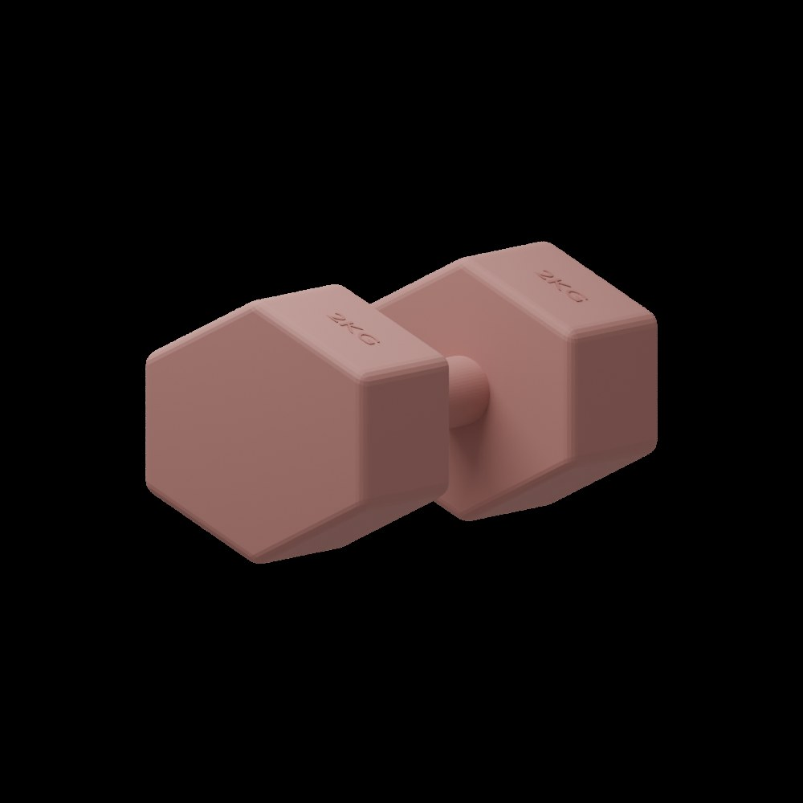
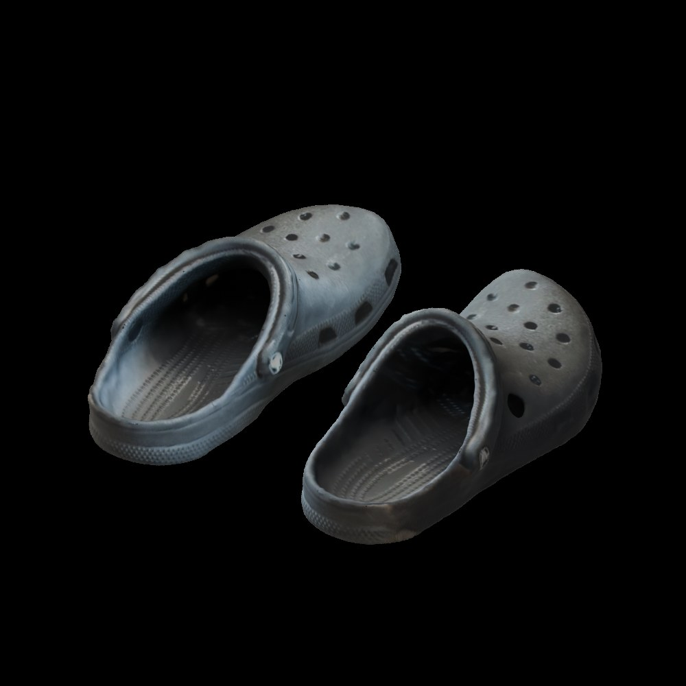
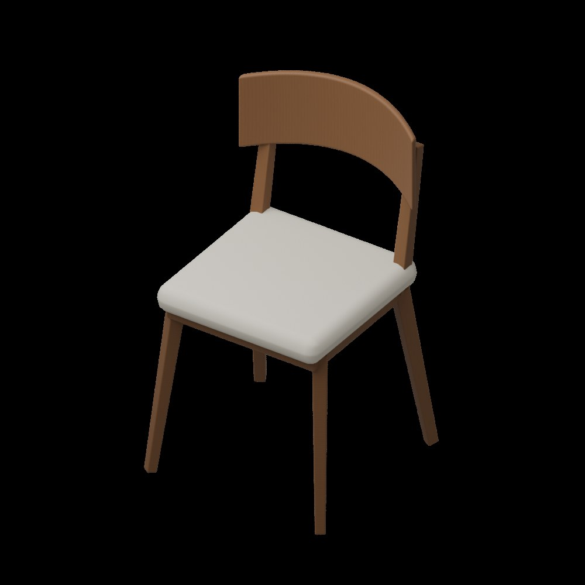

Keep original input
Keep the original scan separately for review and reprocessing. Record physical dimensions, photographs and scan limitations together.
DEVLOG · 2026.09.25 · SCAN / BLENDER / ISAAC SIM
Scan household objects, clean and reconstruct them, then import to Isaac Sim. Use 200 falling balls to inspect whether collision shapes match the visible forms.
00 / THE ASSET LIBRARY
Build a reusable household-obstacle library, not only a demonstration. Each scan and model becomes an independent asset for different rooms, layouts and robot tests.
Real objects → reference scans → agent + Blender cleanup → USD assets → Isaac Sim validation → scene reuse. Scans capture appearance; Blender repairs geometry, dimensions and materials; USD transports assets; Isaac Sim tests contact and sensing. Feed validation back into modeling—successful export is not completion.
Keep the original scan separately for review and reprocessing. Record physical dimensions, photographs and scan limitations together.
Each asset has Blender and USD files, previews and notes, with visual and collision geometry separated. Reference source assets into test scenes; keep experimental collider overrides in the test layer.
Record dimensions, reconstruction methods, collision choices, passed tests and remaining limits. A ball contacting an asset does not prove a robot can navigate around it.
The current local asset library is called simforge_assets , organized by object raw / blender / usd / previews , supporting notes and asset information. Isaac Sim stores referencing scenes, scripts and recordings. Large models and textures remain local; the website presents experiments and GitHub tracks code and lightweight metadata. This is a growing index, not an online asset repository.
SimForge asset creation connects to Omniverse validation: build credible individual assets, compose navigation scenes, then expand layouts and training. The asset library remains reusable throughout.
01 / REAL OBJECTS
Scan a book, dumbbell, shoe and chair into separate GLBs. Check missing faces, floor fragments and scale. Approximate physical dimensions constrain modeling; the scans are not precision measurements.

Four asset groups in Isaac Sim: a book, dumbbell, pair of shoes and chair.
| Assets | Dimensional constraints | Method |
|---|---|---|
| Book | 15 × 24 × 2 cm | Rebuild the cover, spine and page block |
| Dumbbell | 20 × 10 × 10 cm | Rebuild hexagonal weights, handle and embossed lettering |
| Shoe | About 30 × 13 × 10 cm per shoe | Clean the scan, close the base, rebuild meshes and bake textures |
| Chair | 45 × 45 × 80 cm | Rebuild legs, frame, cushion and curved backrest |
02 / BLENDER REBUILD
The scanned book had no bottom. Rebuild a closed book using the scan and measured dimensions: the front texture comes from the scan; the back, edges and page block are reconstructed.

Check the bottom of the book: the completed physical structure is no longer just a scan surface.

Dumbbell lettering initially floated above the surface. Correct its position and orientation so it sits slightly embedded in the slope.

Preserve the scanned shoe appearance and close its base; mirror the repaired right shoe to create the left.
Remove scanned ground, repair seams and holes, voxel-remesh and bake the shoe textures. The left shoe and its texture are mirrored from the right, not independently scanned; small holes are simplified. The chair is rebuilt to dimensions with new wood and cushion materials.

The reconstructed chair retains space between legs and under seats as an important part of the follow-up collision inspection.
03 / SIM-READY
Assets use meters, Z-up and a base at Z=0, with separate visuals/colliders. Book: box; dumbbell: segmented convex hulls; chair: multiple convex parts preserving gaps. Keep scans, Blender sources, USDs, previews and notes separately.
These assets are initially static obstacles without arbitrary masses. A separate scene checks ball contacts and raycasts through selected shoe and chair gaps. This validates sampled locations, not every collision surface.
At the robot's 18.2 cm scan plane, missing the lower book, dumbbell and shoes is expected; the chair is detected. Lowering the scan detects the low objects. Physical collision does not imply visibility to a particular horizontal scan.
04 / DEBUG THE COLLISION
Balls initially stopped too quickly, sometimes mid-bounce. Setting both Sleep Threshold and Stabilization Threshold to 0 restored continuous motion. Their effects were not isolated, so the cause is not assigned to either alone.
Increase ball restitution to 0.68 with max combine mode; static friction 0.28 and dynamic friction 0.20. Low damping permits continued rolling after bounce. These are demonstration settings, not universal training defaults.
I asked whether convex hulls prevented balls entering shoes. Each shoe's three hulls preserved the inter-shoe gap but filled its opening. A test-layer override to static triangle mesh lets rays and balls enter the cavity. Source assets remain unchanged; detailed colliders are local to this test.
05 / TWO HUNDRED BALLS
Progress from 24 to 100 to 200 balls. Vary initial positions, heights and linear/angular velocities under a fixed camera. Use 188 balls of radius 2.6 cm and 12 of radius 1.6 cm aimed into shoe openings with low lateral speed. All motion is physics-driven, without keyframes or snapping.
An independent Play run recorded 10 balls inside the shoe-check region. The video is a separate reset run; these counts were not measured from every video frame.
Movie Capture exported 360 PNGs, encoded into MP4 with FFmpeg and decode-checked. The built-in encoder had previously stalled; frame sequences preserve recoverable source images. Earlier 24-ball and 100-ball versions remain local.
06 / REPLAY
In Isaac Sim, open the local asset_ball_shower_200.usda , switch to /World/ShowerCamera , press Play to observe and Stop to reset. Enable collider visualization for the shoe; inspect the balls' Physics Material for settings. Save edits before rerunning the recording script in Script Editor.
The download contains recording scripts and instructions, dependent on local validated scenes, assets and Isaac Sim. It excludes scan models and textures and is not a standalone one-click project.
Next, place the assets in the corridor and check the robot envelope and low-obstacle sensing blind spots. This stage validates assets and physics; the new objects have not entered PPO training.
Next: navigating past a real chair